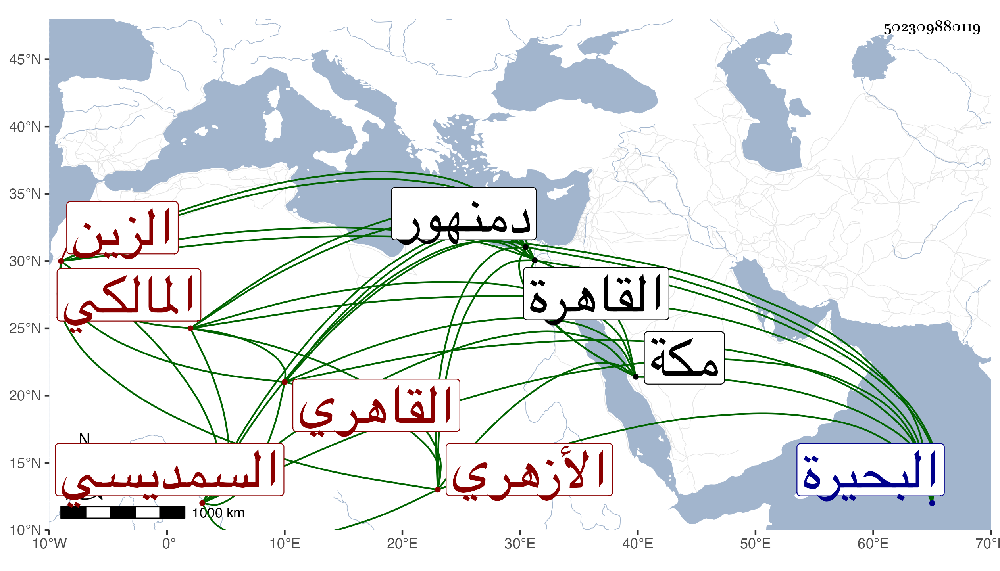

0902Sakhawi.DawLamic.ITO20230111-ara1.EIS1600.502309880119
Biography ID: 502309880119
632
عبد الغفار بن محمد بن موسى بن مسعود الزين السمديسي ثم القاهري الأزهري المالكي . ولد بسمدسية من البحيرة بالقرب من دمنهور ونشأ فحفظ القرآن وتلا به في القاهرة للسبع على الشهاب السكندري والزينين رضوان وطاهر المالكي ولكنه لم يكمل عليه خاصة وبمكة في سنة اثنتين وأربعين على الزين بن عياش وأخذ عن الزينين عبادة وطاهر ، وناب في القضاء عن الولوي السنباطي وابن التنسي ظنا فمن بعده وصارت له وجاهة وأقرأ عند فيروز الزمام وناب عنه في نظر الأوقاف التي تحت نظره وبسفارته عينه الظاهر جقمق لاقراء ولده من ابنة ابن عثمان سيدي أحمد سيما حين ترقى الشرفي الأنصاري فإنه ناب عنه في كثير من جهاته كالبيمارستان وغيره ، وترقى واتسعت دائرته وحج وجاور في السنة المشار إليها وركب الخيول كل ذلك مع وفور عقله وسكيته وحشمته وتواضعه وبشره وتودده ، مات وهو في أواخر الكهولة بحيث جاز الخمسين في صبيحة يوم الجمعة أو في ليلتها ثالث عشري جمادى الثانية سنة إحدى وسبعين بعد مرض طويل رحمه الله وإيانا وأنجب أولاد أسنهم الشرف موسى كما سيأتي كل منهم في محله .
